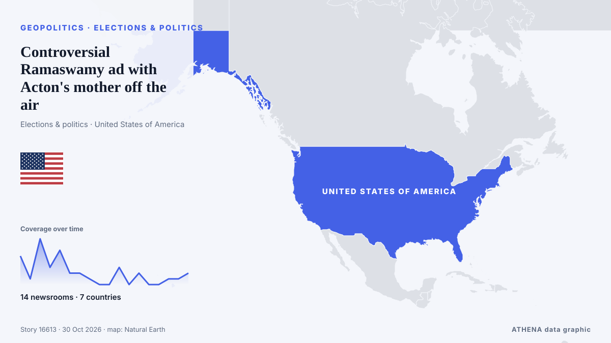

Controversial Ramaswamy ad with Acton's mother off the air

Ohio gubernatorial nominee Vivek Ramaswamy’s (R) campaign is no longer airing a controversial ad featuring his opponent’s mother after it ran its course on the air. από The Hill
Αναφέρθηκε ανεξάρτητα από 14 μέσα σε 7 χώρες από τις 21 Οκτ, πρώτο το The Independent· η κάλυψη εξασθενεί. Το ATHENA εκτιμά τον κίνδυνο χαμηλό (1.5/10), κυρίως λόγω της σοβαρότητάς του και της τεκμηρίωσης. Βεβαιότητα 90% (υψηλή): το επιβεβαιώνουν 14 ανεξάρτητα μέσα, μέση αξιοπιστία 74%. Μέσα ανά χώρα: Ηνωμένες Πολιτείες (19), Ηνωμένο Βασίλειο (9), Ινδία (3). Κάλυψη: 21 Οκτ έως 30 Οκτ, 208 ώρες.
Γιατί έχει σημασία: Οι εξελίξεις στην ασφάλεια και τη διπλωματία μπορούν να μετατοπίσουν συμμαχίες, εμπόριο και αγορές πολύ πέρα από τις χώρες που εμπλέκονται.
Τι άλλαξε: 4 νέες αναφορές από 4 μέσα στο 24ωρο έως 30 Οκτ.
Πρώτη διατύπωση: Vivek Ramaswamy stands by ad featuring Amy Acton's mother despite bipartisan criticism in Ohio
Οι τίτλοι των ειδήσεων παρουσιάζονται στα αγγλικά, όπως δημοσιεύτηκαν.
Με μια ματιά
Επιλέγεται, βαθμολογείται και γράφεται από τη δημοσιευμένη μεθοδολογία του ATHENA. Κανένας συντάκτης δεν παρεμβαίνει σε μεμονωμένα γεγονότα. Πώς παράγεται ›
| 21 Oct 09:34 UTC | 5 |
|---|---|
| 21 Oct 21:34 UTC | 1 |
| 22 Oct 09:34 UTC | 8 |
| 22 Oct 21:34 UTC | 3 |
| 23 Oct 09:34 UTC | 6 |
| 23 Oct 21:34 UTC | 2 |
| 24 Oct 09:34 UTC | 2 |
| 24 Oct 21:34 UTC | 1 |
| 25 Oct 09:34 UTC | 0 |
| 25 Oct 21:34 UTC | 0 |
| 26 Oct 09:34 UTC | 3 |
| 26 Oct 21:34 UTC | 0 |
| 27 Oct 09:34 UTC | 2 |
| 27 Oct 21:34 UTC | 0 |
| 28 Oct 09:34 UTC | 0 |
| 28 Oct 21:34 UTC | 1 |
| 29 Oct 09:34 UTC | 1 |
| 29 Oct 21:34 UTC | 2 |
| 22 Oct 07:05 UTC | 0.0 |
|---|---|
| 22 Oct 11:03 UTC | 1.5 |
| 23 Oct 14:35 UTC | 1.9 |
| 30 Oct 01:10 UTC | 1.5 |
Γιατί αυτοί οι αριθμοί
Σημασία
Κίνδυνος
Βεβαιότητα
Η κάλυψη — ποιος το ανέφερε και πότε
ο τίτλος όπως δημοσιεύτηκε · ανοίγει το πρωτότυπο- The Independent · Ηνωμένο ΒασίλειοRamaswamy campaign admits it made shocking attack ad — then doubles down with $4 million pledge
- The Independent · Ηνωμένο ΒασίλειοRamaswamy called out by heckler over ‘despicable’ attack ad featuring rival’s mother
- CBC News · ΚαναδάςOhio's Vivek Ramaswamy slammed for 'revolting' campaign ad featuring opponent's estranged mother
- PBS NewsHour · Ηνωμένες ΠολιτείεςRamaswamy campaign says it produced ad with Amy Acton's mother and will spend millions to promote it
- Fast Company · Ηνωμένες Πολιτείες‘I’ve never seen anything uglier’: Vivek Ramaswamy’s attack ad featuring candidate’s mother goes too far, says social media
- PBS NewsHour · Ηνωμένες ΠολιτείεςDemocratic and GOP strategists on the deeply personal attack ad in Ohio
- The Guardian · Ηνωμένο ΒασίλειοTrump tells Iowa rally crowd he encouraged Ramaswamy to keep running widely criticized campaign ad – as it happened
- The Independent · Ηνωμένο ΒασίλειοRamaswamy backlash mounts as Ohio governor urges him to take down 'deeply troubling' ad
- The Guardian · Ηνωμένο ΒασίλειοTrump attacks Ohio governor over call for Ramaswamy to drop ‘deeply troubling’ ad
- The Hill · Ηνωμένες ΠολιτείεςTrump doubles down on anti-Acton ad in Ohio: 'Vivek should keep it up'
- BBC News · Ηνωμένο Βασίλειο'This is despicable': Amy Acton responds to Ohio attack ad featuring her estranged mother
- Stuff · Νέα ΖηλανδίαAttack ad using candidate’s estranged mother divides Trump’s party
- The Straits Times · ΣιγκαπούρηTrump backs US campaign attack ad featuring Democrat’s estranged mother
- PBS NewsHour · Ηνωμένες ΠολιτείεςWATCH: Trump defends Ramaswamy's attack ad against Acton amid bipartisan criticism
- The Hill · Ηνωμένες ΠολιτείεςRamaswamy controversy pits Trump, Vance against Ohio GOP establishment
- The Hill · Ηνωμένες ΠολιτείεςTrump on controversial Acton ad: ‘Why would you shield somebody from that?’
- Al Jazeera English · ΚατάρTrump backs Ramaswamy ad featuring rival Amy Acton’s estranged mother
- The Hill · Ηνωμένες ΠολιτείεςRamaswamy's last-ditch attack shows signs of backfiring
- Democracy Now! · Ηνωμένες ΠολιτείεςOhio Governor's Race: Trump Backs Ramaswamy Ad Siding with Opponent's Indicted Childhood Rapist
- The Hill · Ηνωμένες ΠολιτείεςTrump spars with NBC reporter over Ramaswamy attack ad
- PBS NewsHour · Ηνωμένες ΠολιτείεςVivek Ramaswamy defends ad featuring Amy Acton's estranged mother
- The Hill · Ηνωμένες ΠολιτείεςActon's mother was convicted of theft, animal cruelty: What to know
- CBC News · ΚαναδάςVivek Ramaswamy stands by ad featuring Amy Acton's mother despite bipartisan criticism in Ohio
- Indian Express · ΙνδίαWhy Vivek Ramaswamy’s ad featuring Amy Acton’s mother has divided Republicans in Ohio
- Al Jazeera English · ΚατάρHas Vivek Ramaswamy’s attack ad against Amy Acton backfired?
- The Hill · Ηνωμένες ΠολιτείεςJennings: Ramaswamy's campaign tactics 'worst politics you could imagine'
- The Hill · Ηνωμένες ΠολιτείεςObama's quippy Ohio campaign stop: 5 times the former president went after Republicans
- Times of India · Ινδία‘No line he will not cross’: Obama slams Ramaswamy’s ‘cruel’ ad, hits out at Trump
- The Independent · Ηνωμένο ΒασίλειοVivek Ramaswamy’s Ohio gov bid in chaos as allies and venues drop him over Acton attack ad
- The Hill · Ηνωμένες ΠολιτείεςRamaswamy: Acton campaign 'defamed my mother' before attack ad
- The Hill · Ηνωμένες ΠολιτείεςRamaswamy humanized his opponent and dehumanized himself
- The Hill · Ηνωμένες ΠολιτείεςVivek Ramaswamy, have you no sense of decency?
- The Hill · Ηνωμένες ΠολιτείεςVivek Ramaswamy stands by terrible Amy Acton ad, but it's backfiring
- NDTV · Ινδία"He Was Treated Very Unfairly": Trump Defends Vivek Ramaswamy Over Ad Row
- The Independent · Ηνωμένο ΒασίλειοTrump whines that Vivek Ramaswamy is being treated ‘very unfairly’ for using controversial ad
- The Hill · Ηνωμένες ΠολιτείεςControversial Ramaswamy ad with Acton's mother off the air
- The Guardian · Ηνωμένο ΒασίλειοVivek Ramaswamy discontinues attack ad that prompted wave of revulsion